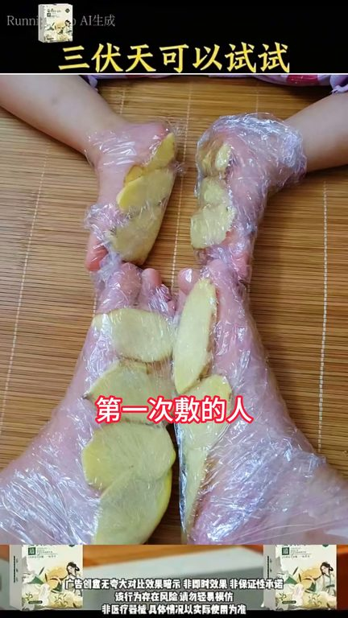
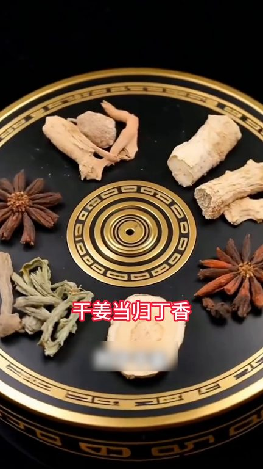
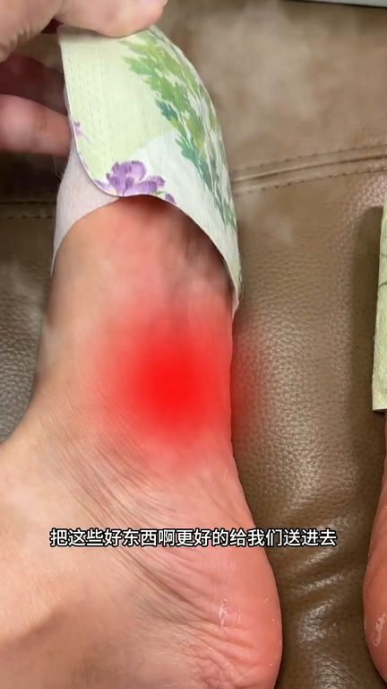

TOP 1 · 代表素材深度拆解
核心放量 强点击
视频为原始素材 HTTPS 链接；点击后加载，建议在网络环境良好时播放。
29.4万素材消耗
4.36%CTR
16.5%类目消耗占比
+1.35pp较类目均值
表现判断
该素材是类目内第 1 名，属于“核心放量”；CTR 高于类目均值。消耗体现承接规模，CTR 体现首屏与定向效率，两项应结合判断，不能仅以单指标下结论。
表达标签
口播三段式证据
开场钩子你知道三福天用生姜敷腳底一個月會有什麼後果嗎除非你不在乎自己的身體否則你一定要把它背上入下以後挑戰美碗用生姜敷腳底第一次敷的人一定要做好準備我怕你早上起來會驚掉下吧今年的三福天是從七月十五號到八月二十三號這四十天是一年當中最好的養生時間
中段论证調配好的姜黃書足貼每一貼裡就包含雲南姜黃愛草義母草乾姜當歸丁香薰衣草紅花等多種優質草本原料每一貼都萃取自然精華檢測報告資質齊全沒有雜七雜八的添加打開包裝撲面而來的是雲南姜黃獨特清香和愛草的淡淡香味獨立包裝一次一貼它這一盒足足有十貼每天貼一次真的很舒服而且還是古晚堂上市二十多年的國貨老品牌用起來特別讓人放心鏈接就在視頻左下角從今天開始每天一貼用實實在在的好東西…
结尾转化好好地把自己再養一遍我們全新升級了透皮發熱層加輕膚無仿布你們還說有點貴我們直接拍五合週期裝到手25對真的不貴了一到秋冬馬馬都冰你們就趁著下雨一定要把它補回來我們家現在搞活動建議你們三合五合的去囤無論是自己用還是全家老小都能安排上安安冷冷睡一個好覺
有效点
- CTR 4.36% 高于类目均值 3.01%，开场或人群指向具备点击优势
- 口播包含明确到手机制或直播间指令，转化路径较完整
迭代动作
- 保留当前高效钩子，复制 3 个变量版本：人物、首句和首帧分别单变量测试
- 视频时长偏长，建议剪出 30–45 秒短版，仅保留钩子、两项证据和一次 CTA
- 复核功效、绝对化及价格稀缺措辞；增加适用边界和效果因人而异提示
合规关注

钩子建立 · 8.1s

场景/问题展开 · 61.4s

卖点证据 · 141.4s
转化收口 · 194.7s
查看完整口播摘要
你知道三福天用生姜敷腳底一個月會有什麼後果嗎除非你不在乎自己的身體否則你一定要把它背上入下以後挑戰美碗用生姜敷腳底第一次敷的人一定要做好準備我怕你早上起來會驚掉下吧今年的三福天是從七月十五號到八月二十三號這四十天是一年當中最好的養生時間有條件的一定要抓住三福天堅持用生姜貼腳底老話說呀三福不養羊一年都白忙三福的白皺時間比較長正是調養我們身體的時候從入福開始一直到末福結束一定要抓住這四十天多用生姜貼腳底姜黃愛草義母草當歸這幾個兄弟湊一起的威力你敢想嗎你就拿回去敷到三福結束你再仔細看看自己這個方法在古籍中已經記載了千年只需要晚上睡覺時把它敷在腳底清早起來把它撕掉會發現上面黑呼呼的摸上去還油呼呼的老祖宗流傳了幾千年的智慧聽話照做準沒錯如果嫌自己調配太麻煩可以試試這款古晚堂經過科學配比調配好的姜黃書足貼每一貼裡就包含雲南姜黃愛草義母草乾姜當歸丁香薰衣草紅花等多種優質草本原料每一貼都萃取自然精華檢測報告資質齊全沒有雜七雜八的添加打開包裝撲面而來的是雲南姜黃獨特清香和愛草的淡淡香味獨立包裝一次一貼它這一盒足足有十貼每天貼一次真的很舒服而且還是古晚堂上市二十多年的國貨老品牌用起來特別讓人放心鏈接就在視頻左下角從今天開始每天一貼用實實在在的好東西好好愛自己愛家人第一天11點就睡了第二天10點就睡著了第三天不到9點進來就睡熟了我也不知道它這個到底是什麼原理反正現在全家人都用它不到9點就都去睡了剛開始我也以為它這個就是智商所以後來我看了一眼它這個成分表它這裡面你看有加了薑黃愛草義無草甘薑丹桂金香薰衣草紅花等等多種草本精粹就這些可都是老祖宗的智慧它這裡面每一個都是這種獨立包裝的打開就能發熱我現在每天晚上睡覺之前都會貼上它然後你就能感覺到有一股軟牛從腳底到小腿再延續到全身再隨著溫度升高把這些好東西更好的給我們送進去而且它還能持續發熱五個小時以上就是你貼著它睡覺第二天早上起來你真的都能感覺到整個人都神情氣喘的關鍵是人家這價格也不貴你就趁著他們家有活動的時候一次性多囤上幾何全家老少都能跟著一起用所謂說冬天的問題夏天來解決特別是現在夏天每天都在空調房你就每天浮上一下讓自己的身體在冬天告訴你它的好上家正好有活動趁著活動合適刷到的姐妹們真的要多囤上幾何這個冬三月用它好好地把自己再養一遍我們全新升級了透皮發熱層加輕膚無仿布你們還說有點貴我們直接拍五合週期裝到手25對真的不貴了一到秋冬馬馬都冰你們就趁著下雨一定要把它補回來我們家現在搞活動建議你們三合五合的去囤無論是自己用還是全家老小都能安排上安安冷冷睡一個好覺